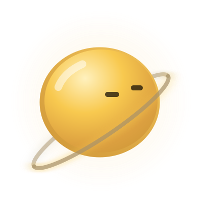
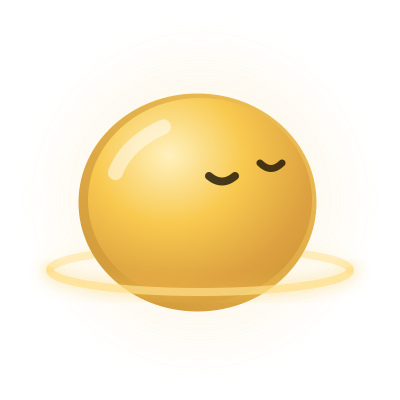

Mascotas Solaris · v1.0
Estados
solaris · reposo
solaris · escuchando
solaris · pensando
solaris · hablando
solaris · logrado

solaris · error

solaris · pausa
negro · reposo
negro · escuchando
negro · pensando
negro · hablando
negro · logrado
negro · error
negro · pausa